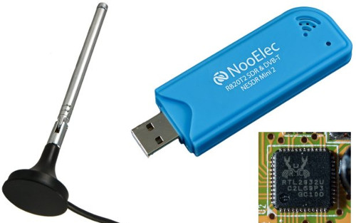
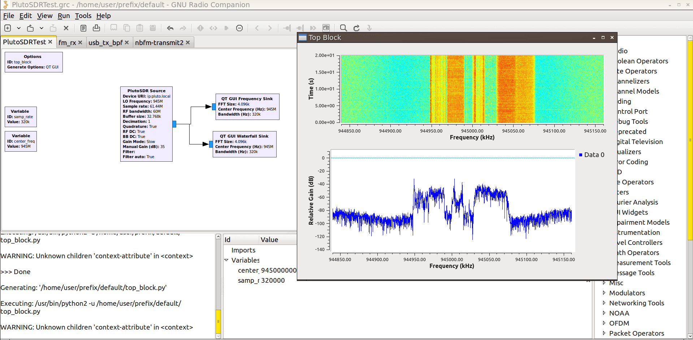

<!doctype html>
<html lang="en">
  <head>
    <meta charset="utf-8">

    <title>FM Demodulation with RTL-SDR</title>

    <meta name="author" content="Doug Hoyte">

    <meta name="apple-mobile-web-app-capable" content="yes" />
    <meta name="apple-mobile-web-app-status-bar-style" content="black-translucent" />

    <meta name="viewport" content="width=device-width, initial-scale=1.0, maximum-scale=1.0, user-scalable=no, minimal-ui">

    <link rel="stylesheet" href="../reveal.js/css/reveal.css">
    <link rel="stylesheet" href="../reveal.js/css/theme/white.css" id="theme">

    <!-- Code syntax highlighting -->
    <link rel="stylesheet" href="../reveal.js/lib/css/zenburn.css">

    <!-- Printing and PDF exports -->
    <script>
      var link = document.createElement( 'link' );
      link.rel = 'stylesheet';
      link.type = 'text/css';
      link.href = window.location.search.match( /print-pdf/gi ) ? '../reveal.js/css/print/pdf.css' : '../reveal.js/css/print/paper.css';
      document.getElementsByTagName( 'head' )[0].appendChild( link );
    </script>

    <!--[if lt IE 9]>
    <script src="../reveal.js/lib/js/html5shiv.js"></script>
    <![endif]-->

    <style>
      .reveal .slides h1, .reveal .slides h2, .reveal .slides h3 {
        text-transform: none;
      }

      .two-column {
        display: flex;
        flex-wrap: wrap;
      }

      .two-column em {
        margin: 20px;
      }

      .reveal .slides img {
        border: 0;
        box-shadow: none;
      }

      body .reveal .slides {
      }
    </style>
  </head>

  <body>
    <div class="reveal">
      <div class="slides">

<!------------------------------------------------------->

<section data-markdown><script type="text/template">

# FM Demodulation with RTL-SDR

Doug Hoyte

VE3HOY

</script></section>


<section data-markdown><script type="text/template">

## SDR

* *Software-Defined Radio*
* Raw-radio samples are processed by your computer with software
* "sound-card for radio data"

</script></section>


<section data-markdown><script type="text/template">

## RTL

* Short for *Realtek RTL2832U* microchip (and clones)
* Originally for digital TV dongles
* Popular with radio hackers

</script></section>


<section data-markdown><script type="text/template">

25 Mhz-1.7 GHz, 2.5M samples/sec, ~$20



</script></section>


<section data-markdown><script type="text/template">

## GNU Radio (C++)



</script></section>


<section data-markdown><script type="text/template">

### I/Q Sampling


* Treat them as complex numbers

</script></section>


<section data-markdown><script type="text/template">

### Frequency is the derivative of phase


* Amplitude of audio signal is encoded as frequency
* Frequency is the change in phase

</script></section>


<section data-markdown><script type="text/template">

## FM demodulation

      my $prev = $I->slice([0, -2]) + (i * $Q->slice([0, -2]));
      my $curr = $I->slice([1, -1]) + (i * $Q->slice([1, -1]));

      my $deriv = ($curr * $prev->Cconj())->Carg();


* Multiplying complex numbers adds their phase angles, complex conjugate is negation of phase

</script></section>


<section data-markdown><script type="text/template">

## Open audio device

    my $audio_sample_rate = 50_000;

    open(
      my $audio_sink,
      '|-:raw',
      "play -t raw -r $audio_sample_rate -e float -b 32 -c 1 -"
    );

</script></section>


<section data-markdown><script type="text/template">

## How does it sound?

    $ perl fmrecv.pl 96.3

</script></section>


<!------------------------------------------------------->


      </div>

    </div>

    <script src="../reveal.js/lib/js/head.min.js"></script>
    <script src="../reveal.js/js/reveal.js"></script>

    <script>

      // Full list of configuration options available at:
      // https://github.com/hakimel/reveal.js#configuration
      Reveal.initialize({
        controls: true,
        progress: true,
        history: true,
        center: true,

        transition: 'none', // none/fade/slide/convex/concave/zoom

        // Optional reveal.js plugins
        dependencies: [
          { src: '../reveal.js/plugin/markdown/marked.js', condition: function() { return !!document.querySelector( '[data-markdown]' ); } },
          { src: '../reveal.js/plugin/markdown/markdown.js', condition: function() { return !!document.querySelector( '[data-markdown]' ); } },
          { src: '../reveal.js/plugin/highlight/highlight.js', async: true, callback: function() { hljs.initHighlightingOnLoad(); } },
        ]
      });

    </script>

  </body>
</html>
